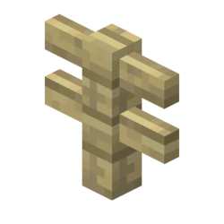

Fence

Description
A wooden fence. It's nice because you can't jump over it.
They also connect with each other! You can put in fence gates too!
Ingredients
- 4 matching wood planks
- 2 sticks
Steps
- Use your crafting table
- Put the planks in the bottom two spaces of the first and last columns
- Put the sticks between them
- Press craft
- This will make 6 fences
Return to wiki homepage